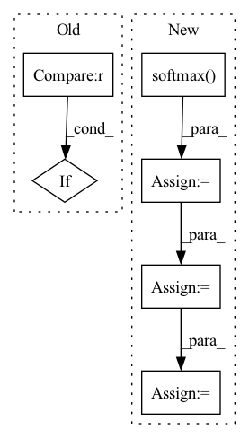

Pattern ID :866
Before Change
nei_message = nei_message.sum(dim=1)
ainput = torch.cat([fatoms, nei_message], dim=1)
atom_hiddens = self.act_func(self.W_o(ainput))
if self.dropout > 0 :
atom_hiddens = F.dropout(atom_hiddens, self.dropout, self.training)
mol_vecs = []
for st, le in scope:After Change
if self.attention:
att_w = torch.matmul(self.W_a(cur_hiddens), cur_hiddens.t())
att_w = F.softmax( att_w, dim=1)
att_hiddens = torch.matmul(att_w, cur_hiddens)
att_hiddens = self.act_func(self.W_b(att_hiddens))
att_hiddens = self.dropout_layer(att_hiddens)
mol_vec = (cur_hiddens + att_hiddens)
else:
mol_vec = cur_hiddens
In pattern: SUPERPATTERN
Frequency: 3
Non-data size: 6
Instances Fragment ID: 3149104
Project Name: aamini/chemprop
Commit Name: 12d967c5d8a51753b5df6b0ad56e2db319c20e51
Time: 2018-09-23
Author: swansonk.14@gmail.com
File Name: deepchem-test/mpn.py
M Class Name: MPN
N Class Name: MPN
M Method Name: forward(2)
N Method Name: forward(2)
M Parent Class: nn.Module
N Parent Class: nn.Module
M File Name: deepchem-test/mpn.py
N File Name: deepchem-test/mpn.py
M Start Line: 228
M End Line: 240
N Start Line: 238
N End Line: 260
Before Change
v = squash(s, dim=-1)
// Update b
if it < self.num_iterations - 1 :
b = b + torch.einsum("ijk, ilk -> jl", u_hat, v)
else:
return v
After Change
b += uv
// Last iteration with original u_hat to pass gradient
c = b.softmax(dim=1)
s = torch.einsum("ijk, ijkl -> ijl", c, u_hat_temp)
v = squash(s)
return v
Fragment ID: 3149136
Project Name: riroaki/capsnet
Commit Name: 408b1e77f4e40589def9c313c0b11beaa88f2108
Time: 2020-03-08
Author: aki@akideMacBook-Pro.local
File Name: capsnet.py
M Class Name: DigitCaps
N Class Name: DigitCaps
M Method Name: forward(2)
N Method Name: forward(2)
M Parent Class: nn.Module
N Parent Class: nn.Module
M File Name: capsnet.py
N File Name: capsnet.py
M Start Line: 47
M End Line: 65
N Start Line: 52
N End Line: 84
Before Change
return softmax
def forward(self, logits, samples, soft):
if samples is None :
return self.gumbel_softmax(logits, self._temperature, self._eps, hard=True)
else:
return -torch.sum(-samples * F.log_softmax(logits, -1), -1)
After Change
def forward(self, logits: torch.Tensor, tau: float = 1, hard: bool = False, dim: int = -1):
gumbels = -torch.empty_like(logits, memory_format=torch.legacy_contiguous_format).exponential_().log() // ~Gumbel(0,1)
gumbels = (logits + gumbels) / tau // ~Gumbel(logits,tau)
y_soft = gumbels.softmax( dim)
if hard:
// Straight through.
index = y_soft.max(dim, keepdim=True)[1]
y_hard = torch.zeros_like(logits, memory_format=torch.legacy_contiguous_format).scatter_(dim, index, 1.0)
ret = y_hard - y_soft.detach() + y_soft
else:
// Reparametrization trick.
ret = y_soft Fragment ID: 3149170
Project Name: xiaosu-zhu/mcquic
Commit Name: e12be331e275549e5b8a7ef6a7c8dbf6d4e387bf
Time: 2021-04-08
Author: xiaosu.zhu@outlook.com
File Name: src/mcqc/layers/gumbelSoftmax.py
M Class Name: GumbelSoftmax
N Class Name: GumbelSoftmax
M Method Name: forward(5)
N Method Name: forward(4)
M Parent Class: nn.Module
N Parent Class: nn.Module
M File Name: src/mcqc/layers/gumbelSoftmax.py
N File Name: src/mcqc/layers/gumbelSoftmax.py
M Start Line: 40
M End Line: 44
N Start Line: 8
N End Line: 21